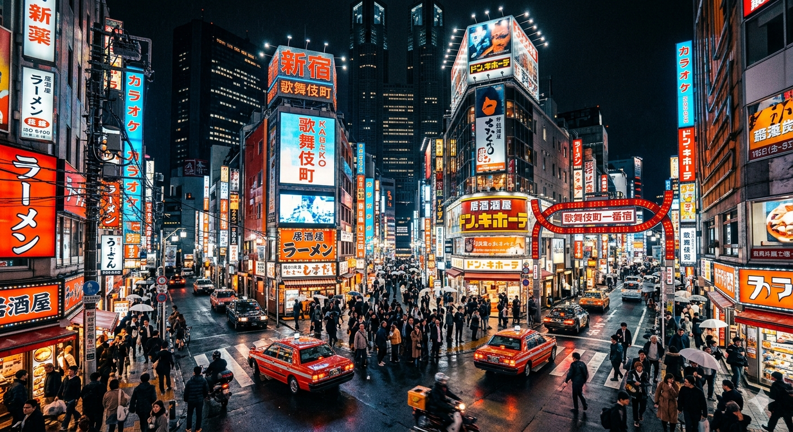
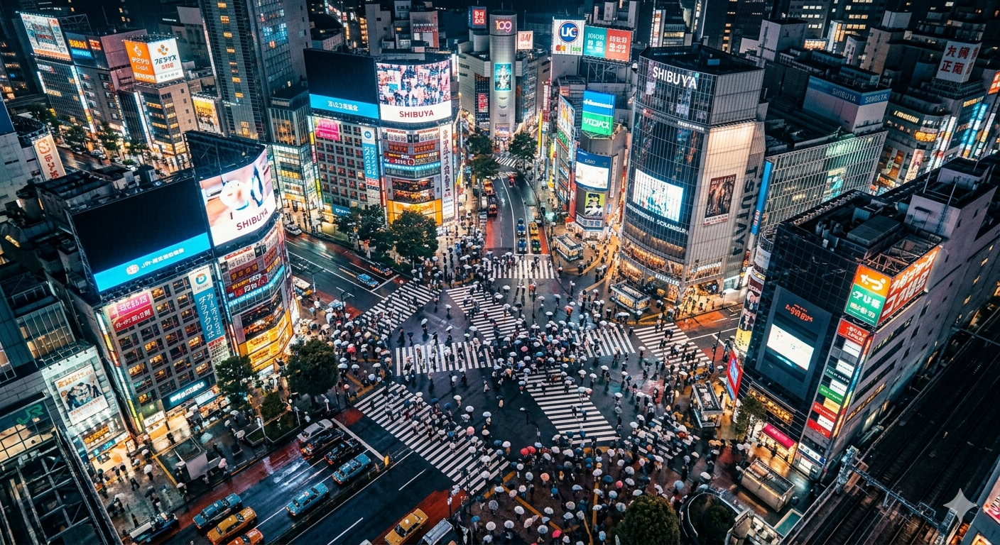
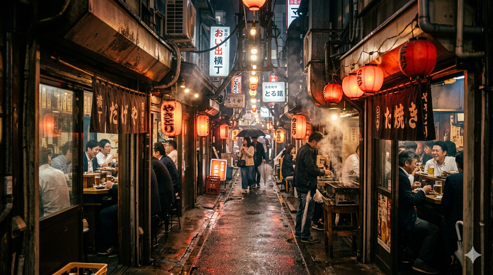
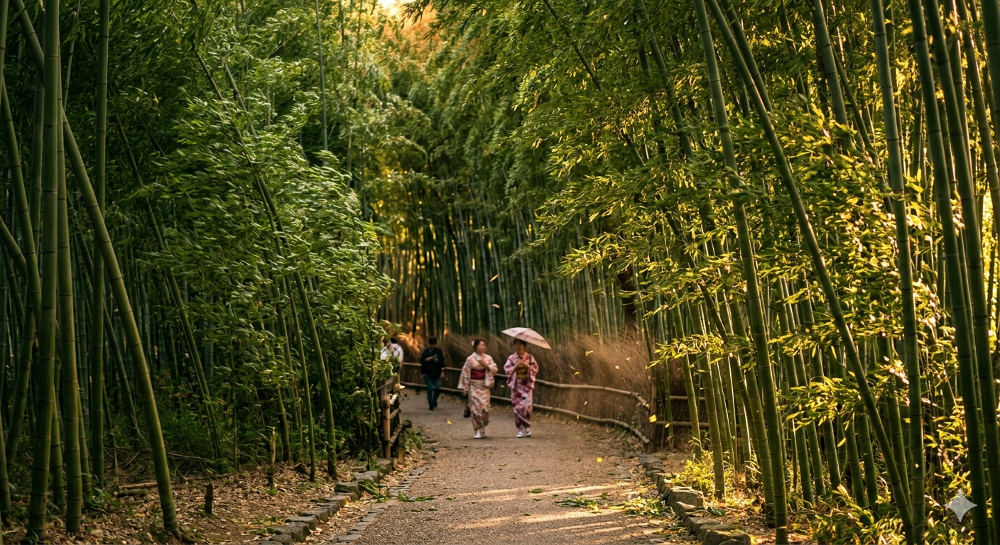
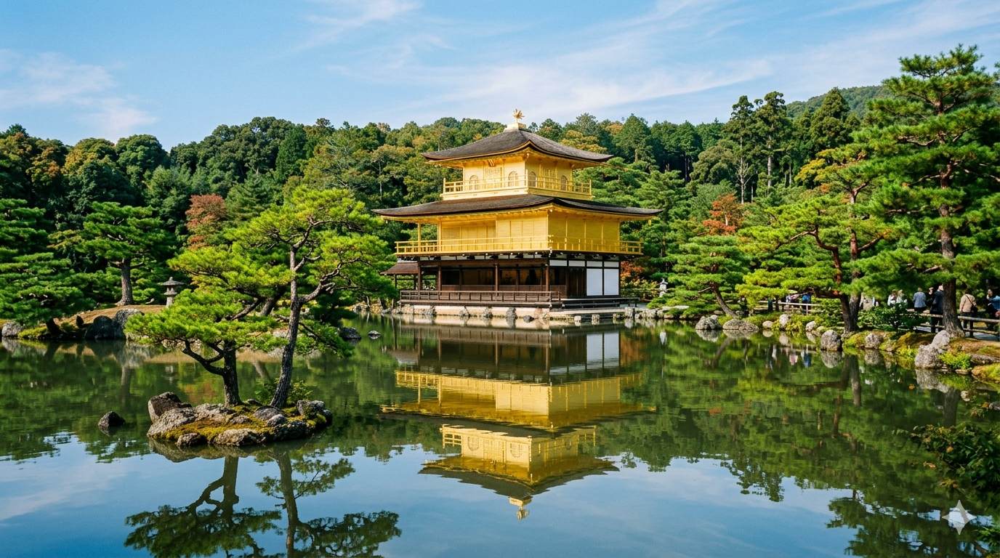
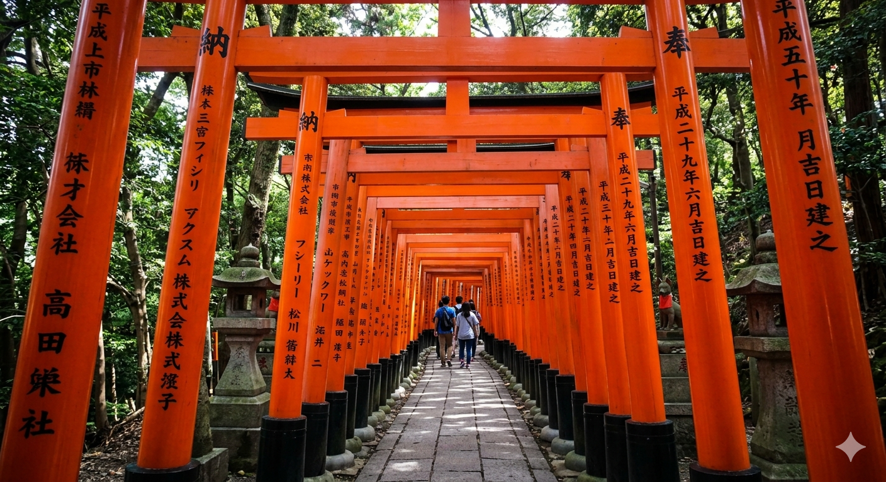
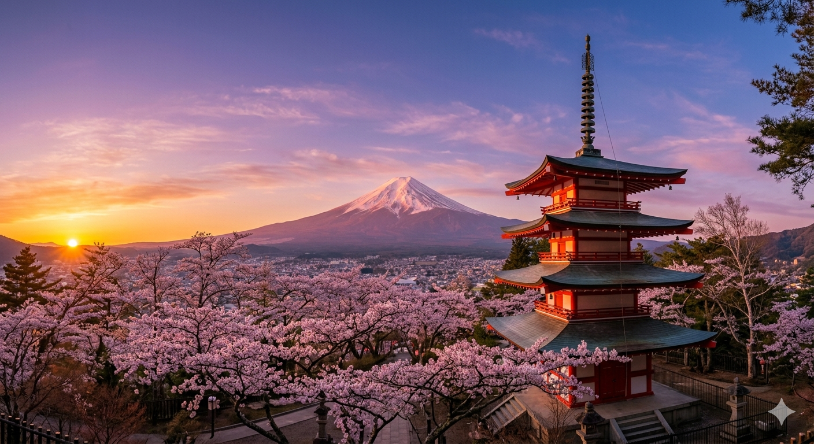
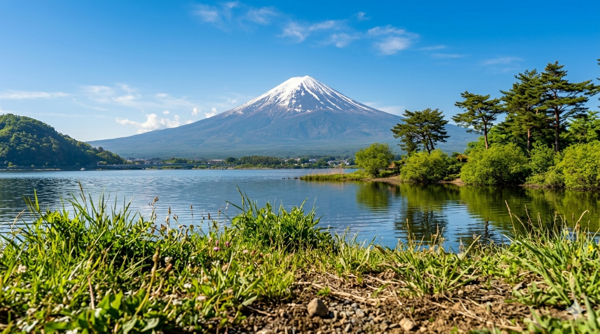
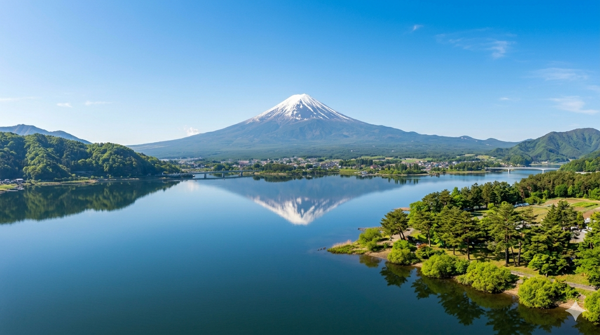

Экспозиция ощущений
Фотография улавливает то, что ускользает от взгляда. Погрузитесь в контрасты великой восточной культуры через призму трех аутентичных визуальных сюжетов.
東京 Неоновые улицы Токио

Огни полуночного Синдзюку

Ритм перекрестка Сибуя

Скрытые переулки Омоидзэ Ёкотё
非現実
Призрачные хроники
京都 Умиротворяющие рощи Киото

Стебли Арасиямы на ветру

Отражение Золотого Павильона

Коридоры ворот Фусими Инари
富士山 Заснеженные вершины Фудзи

Пагода Чурейто на рассвете

Зеркало озера Кавагутико

Священный пик сквозь облака
旅のルート
Спланируйте своё приключение
Откройте готовые авторские маршруты по самым удивительным уголкам страны. От динамичных кварталов мегаполисов до уединенных троп в древних лесах — начните планировать путешествие мечты прямо сейчас.
Посмотреть маршруты